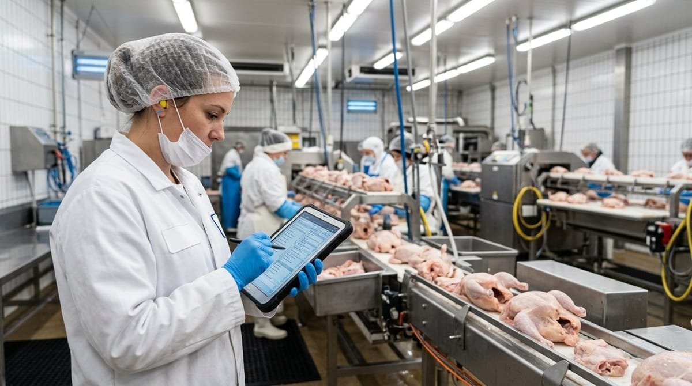

Software de calidad para industria avícola

Software de calidad para industria avícola
El software de calidad para industria avícola se ha convertido en una herramienta indispensable para cualquier responsable de calidad que quiera mantener el control real sobre sus procesos, cumplir con la normativa vigente y superar auditorías sin sobresaltos. La industria avícola presenta particularidades técnicas y regulatorias que la diferencian claramente de otros sectores cárnicos: velocidades de sacrificio muy elevadas, cadenas de frío estrictas, control microbiológico exigente y una trazabilidad de lote que debe funcionar en tiempo real. Confiar esa responsabilidad a hojas de cálculo o a módulos genéricos de un ERP es, sencillamente, asumir un riesgo innecesario.
Los puntos de control específicos de la industria avícola: bienestar animal, control microbiológico y cadena de frío en el despiece
La industria avícola concentra en un espacio reducido y en pocas horas una cantidad de puntos de control que en otros sectores se distribuyen a lo largo de días. El bienestar animal en la recepción de aves vivas es el primero de ellos: inspección ante mortem, registro de bajas durante el transporte, condiciones de espera y aturdimiento. Cualquier desviación en este punto no solo supone un incumplimiento legal, sino un riesgo reputacional inmediato.
A continuación, el control microbiológico ocupa un lugar central. Tal y como establece el Reglamento (CE) n.º 2073/2005 relativo a los criterios microbiológicos aplicables a los productos alimenticios (Reglamento [CE] 2073/2005, 2005), existen criterios específicos de seguridad alimentaria e higiene del proceso para canales de broiler, incluyendo límites para Salmonella y recuentos de Campylobacter. El cumplimiento de estos criterios exige un plan de muestreo sistemático, una gestión ágil de resultados analíticos y la capacidad de relacionar cada resultado con el lote concreto al que pertenece.
Por último, la cadena de frío en el despiece es el tercer eje crítico. Las piezas deben alcanzar la temperatura requerida en los tiempos marcados y mantenerse en rango hasta el momento de la expedición. Cualquier rotura, aunque sea puntual, puede invalidar un lote completo o desencadenar una no conformidad en auditoría. Un software de calidad para el sector avícola debe registrar, alertar y documentar estas desviaciones de forma automática, sin depender de que el operario recuerde apuntar el dato.
Por qué las no conformidades de temperatura y trazabilidad de lote son las más frecuentes en auditoría avícola
Cuando se analizan los informes de auditoría de mataderos avícolas y salas de despiece, dos categorías de no conformidades aparecen de forma recurrente: las relacionadas con el control de temperatura y las vinculadas a la trazabilidad de lote. La razón no es que los equipos de calidad no sean competentes; es que la velocidad de la línea y el volumen de datos generados superan con creces lo que cualquier sistema manual puede gestionar.
En una línea de sacrificio avícola de volumen medio, pueden procesarse miles de aves por hora. Cada una de ellas genera puntos de dato que deben quedar registrados y vinculados: temperatura de canal, resultado de inspección, destino de la partida, número de lote de origen. Si este registro se realiza a mano o se vuelca a posteriori en una hoja de cálculo, la trazabilidad queda rota en la práctica, aunque sobre el papel parezca correcta.
Las no conformidades de temperatura surgen, en muchos casos, no porque los equipos fallen, sino porque el registro no es continuo o porque la alerta llega tarde, cuando el producto ya ha salido del punto de control. Un software específico conectado a sensores o integrado con los sistemas de la cámara permite detectar la desviación en el momento en que ocurre, no horas después. Esto convierte una posible retirada de producto en una simple corrección documentada, que es exactamente lo que el auditor quiere ver.
En cuanto a la trazabilidad, la exigencia legal es clara: tal y como recoge el Reglamento (CE) n.º 178/2002 por el que se establecen los principios y requisitos generales de la legislación alimentaria (Reglamento [CE] 178/2002, 2002), todos los operadores de empresa alimentaria deben poder identificar a cualquier persona que les haya suministrado un alimento y a las empresas a las que han suministrado sus productos. En la práctica avícola, donde un lote de canal puede mezclarse con otro durante el despiece o la elaboración de preparados, mantener esa trazabilidad requiere un sistema digital que gestione esas relaciones de forma automática.
Qué debe aportar un software de calidad pensado para matadero y sala de despiece frente a un ERP genérico
Esta es la pregunta que más escuchamos de los responsables de calidad que han intentado adaptar un ERP corporativo a sus necesidades específicas. La respuesta es sencilla: un ERP está diseñado para gestionar recursos empresariales, no para ser el sistema nervioso de un plan de calidad alimentaria.
Un software de calidad orientado a la industria alimentaria y, en concreto, al procesado de aves, debe incluir de serie funcionalidades que en un ERP requieren desarrollos costosos y nunca del todo satisfactorios. Entre ellas, destacan las siguientes:
Gestión de APPCC adaptada al flujo avícola. Los puntos de control crítico en un matadero avícola tienen una lógica específica: temperatura de escaldado, control de contaminación cruzada en evisceración, enfriamiento. El software debe permitir configurar esos PCCs con sus límites críticos, acciones correctoras y frecuencias de verificación, y generar los registros de forma guiada para el operario.
Gestión de no conformidades integrada. Cuando se detecta una desviación, el sistema debe abrir automáticamente la no conformidad, asignarla al responsable correspondiente y solicitar la acción correctora. Igual que se explica en nuestro artículo sobre software de calidad para la industria cárnica, la trazabilidad de las incidencias es tan importante como la del producto.
Control de proveedores y materias primas. En avicultura, la calidad del ave viva que entra en el matadero condiciona todo el proceso posterior. Un sistema de control de calidad de proveedores integrado permite evaluar el historial de cada granja, gestionar los certificados sanitarios y relacionar el resultado del proceso con el origen del lote.
Trazabilidad bidireccional en tiempo real. Del proveedor al consumidor y del consumidor al proveedor, con capacidad de acotar un lote afectado en minutos, no en horas.
Cuadros de mando e informes para auditoría. El auditor debe poder ver, de forma clara y ordenada, el histórico de registros, las desviaciones detectadas y las acciones correctoras aplicadas. Un software específico genera esos informes en un clic; un ERP, en el mejor de los casos, los genera con la ayuda del departamento de IT.
Cómo empezar por los puntos de control críticos sin parar la línea de sacrificio
Uno de los frenos más habituales a la implantación de un software de calidad en mataderos avícolas es el miedo a la disrupción operativa. La línea no puede parar, la velocidad de sacrificio no puede verse comprometida y el equipo de planta no puede dedicar semanas a una formación compleja. Este miedo es comprensible, pero parte de una premisa equivocada: que implantar un software de calidad significa cambiarlo todo a la vez.
La aproximación correcta es la contraria. Se empieza por digitalizar los dos o tres puntos de control más críticos, normalmente temperatura de canal y trazabilidad de lote, y se valida que el sistema funciona correctamente en ese entorno antes de expandirlo al resto del flujo. Este enfoque por fases permite que el equipo de planta se familiarice con la herramienta de forma progresiva y que el responsable de calidad vea resultados reales desde las primeras semanas.
Solved está diseñado exactamente para este tipo de implantación: modular, configurable y adaptable al ritmo de cada empresa. No hace falta esperar a tener todo el sistema APPCC digitalizado para empezar a ganar control sobre los puntos que más impactan en la auditoría y en la seguridad del producto.
Si quieres saber cómo Solved puede adaptarse a las particularidades de tu matadero o sala de despiece avícola, contacta con nuestro equipo y te mostramos la herramienta con datos reales del sector.
Referencias
- Reglamento (CE) n.o 178/2002 del Parlamento Europeo y del Consejo, de 28 de enero de 2002, por el que se establecen los principios y los requisitos generales de la legislacion alimentaria. (2002). https://eur-lex.europa.eu/eli/reg/2002/178/oj?locale=es
- Reglamento (CE) n.o 2073/2005 de la Comision, de 15 de noviembre de 2005, relativo a los criterios microbiologicos aplicables a los productos alimenticios. (2005). https://eur-lex.europa.eu/eli/reg/2005/2073/oj?locale=es